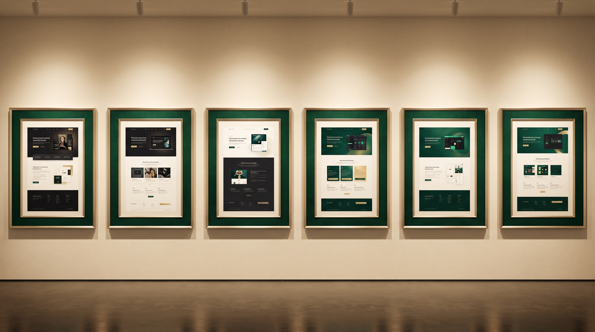

Selected concepts & demonstrations
Ideas made easier to see.
Explore website concepts, practical business tools and software prototypes. Concepts are labelled honestly; a published demo appears only after its real URL is added.
Founder-led digital studio
Every concept, honestly labelled.
These examples show the types of problems PeakCraft can help solve. Some are interactive prototypes or design concepts, not client deployments or production systems.
36
project concepts
Concept disclosure
Each project below carries a status label. A "Live Demo" label only appears when a real HTTPS URL has been added to the project configuration — not before.
Showing all project concepts.
Featured Demo — See PeakCraft in action
Have a similar business need?
Build Something Similar
Contact us to discuss a project. Custom applications, SaaS and complex integrations are quoted individually.